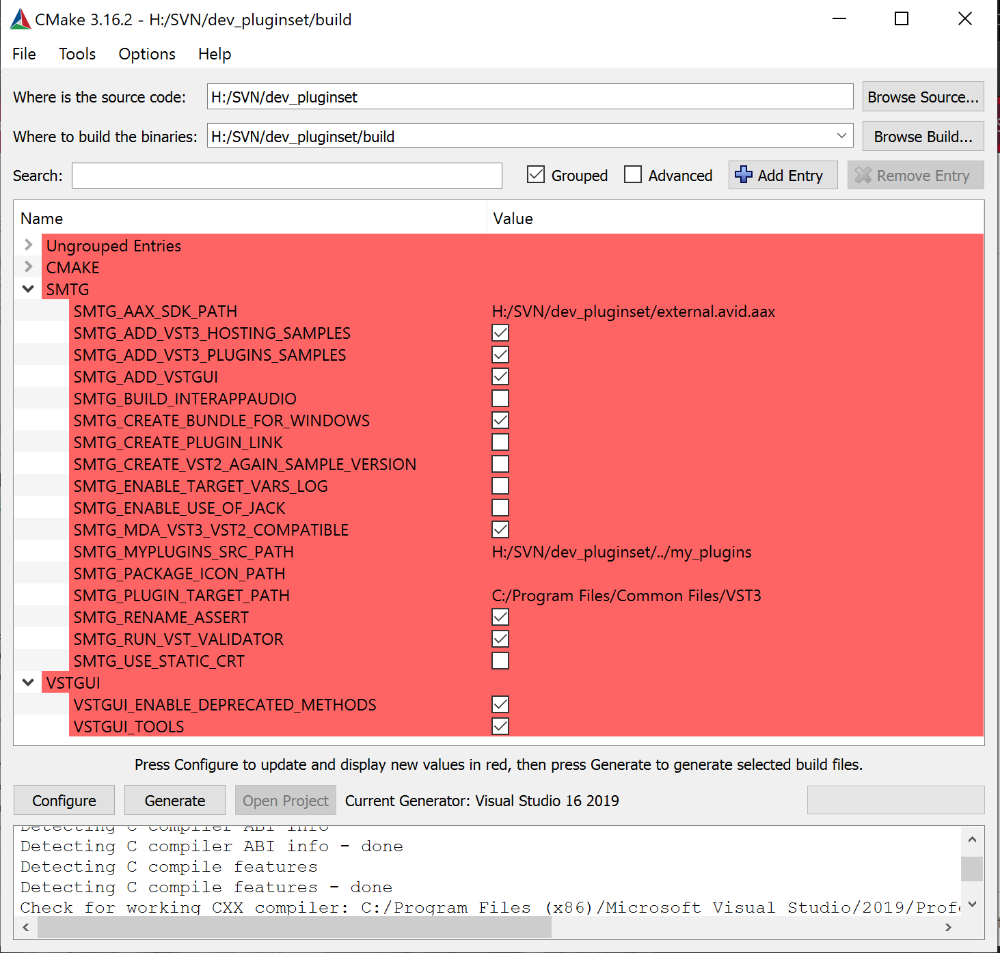
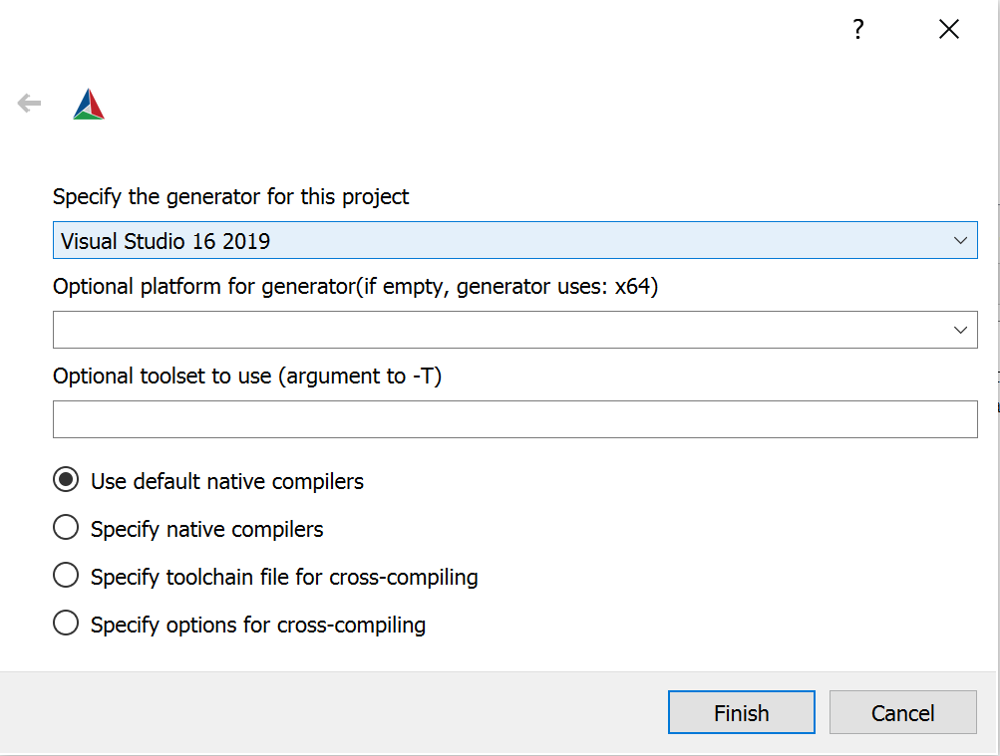

/ VST Home / Tutorials / Building the examples
Building the examples included in the SDK on Windows
On this page:
- Goal
- Part 1: Getting and installing the VST SDK
- Part 2: Building the examples on Windows
- Building using cmake-gui
Goal
This tutorial explains how to set up your computer and create an environment for compiling the VST 3 audio plug-in examples provided with the VST SDK. These include plug-ins like simple DSP effects (Gain, compressor, delay, ...), synths instruments and some plug-ins showing how to handle some specific VST 3 features (Note Expression, Program Change, channel info context, ...).
They can be loaded into VST 3 hosts like Cubase, WaveLab, ...
Part 1: Getting and installing the VST SDK
For downloading the SDK, see this section "How to set up my system for VST 3".
Download cmake from: https://cmake.org/download/ or use a package manager for your OS.
Part 2: Building the examples on Windows
- Create a folder for the build and move to this folder (using cd):
mkdir build
cd build
- Generate the solution/projects: specify the path to the project where CMakeLists.txt is located:
cmake.exe -G "Visual Studio 17 2022" -A x64 ../vst3sdk
or without symbolic links
cmake.exe -G "Visual Studio 17 2022" -A x64 ../vst3sdk-DSMTG_CREATE_PLUGIN_LINK=0
ⓘ Note
You can find the string definition for different Visual Studio Generators in the cmake online documentation (https://cmake.org/documentation/)
- You have to adapt your Windows right access to allow creation of symbolic links for VST 3 plug-ins: Check HERE!
- Build the plug-in (you can use Visual Studio too):
msbuild.exe vstsdk.sln
(or alternatively, for example, for release)
cmake --build . --config Release
Building using cmake-gui
- Start the cmake-gui application which is part of the cmake installation (https://cmake.org/download/)

- Browse Source...: select the folder VST3_SDK
- Browse Build...: select a folder where the outputs (projects/...) will be created. Typically a folder named build
- You can check the SMTG Options
- Press Configure and choose the generator in the window that opens: for example, "Visual Studio 17 2022"

- Press Generate to create the project
- Open your targeted IDE, and compile the solution/project.